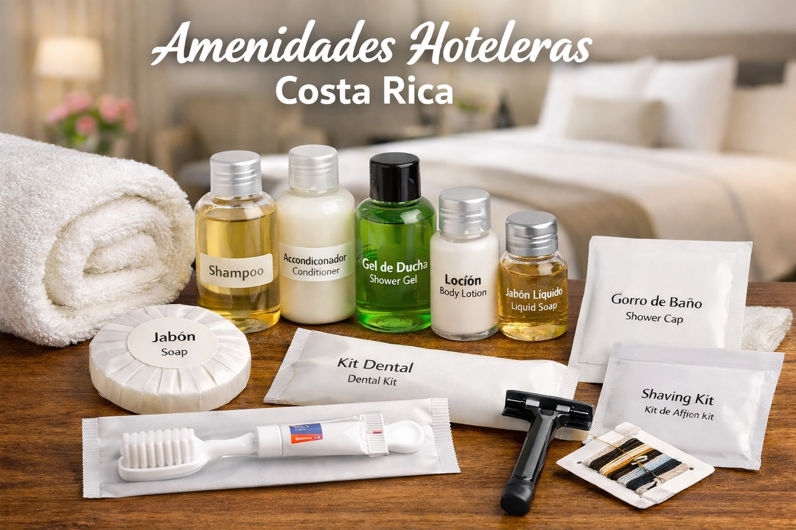

Las amenidades hoteleras son un elemento esencial para ofrecer una experiencia cómoda y profesional a los huéspedes. En Costa Rica, hoteles, resorts y alojamientos tipo Airbnb buscan productos de calidad que reflejen limpieza, comodidad y sostenibilidad.
En Hotel Suministros ofrecemos una amplia variedad de amenidades para hoteles, incluyendo shampoo, acondicionador, jabón y kits para huéspedes diseñados especialmente para el sector hotelero.
Los hoteles utilizan shampoo y acondicionador de tamaño individual para garantizar higiene y comodidad a los huéspedes. Estos productos son una parte esencial del baño en hoteles modernos.
El jabón para hotel es una de las amenidades más comunes. Generalmente se ofrece en presentaciones individuales para mantener altos estándares de higiene.
Muchos hoteles ofrecen kits adicionales como:
Hotel Suministros trabaja con fabricantes especializados para ofrecer productos de alta calidad a hoteles, hostales y alojamientos turísticos en Costa Rica.
Ofrecemos:
Puedes explorar algunos de nuestros productos:
El turismo en Costa Rica continúa creciendo cada año, y los hoteles necesitan amenidades que ofrezcan calidad y sostenibilidad. Muchos establecimientos buscan productos ecológicos y empaques reciclables para alinearse con la filosofía ambiental del país.
Los hoteles normalmente ofrecen shampoo, acondicionador, jabón y otros artículos básicos para la comodidad de los huéspedes.
Los hoteles pueden adquirir amenidades a través de proveedores especializados como Hotel Suministros, que ofrecen productos diseñados específicamente para el sector hotelero.